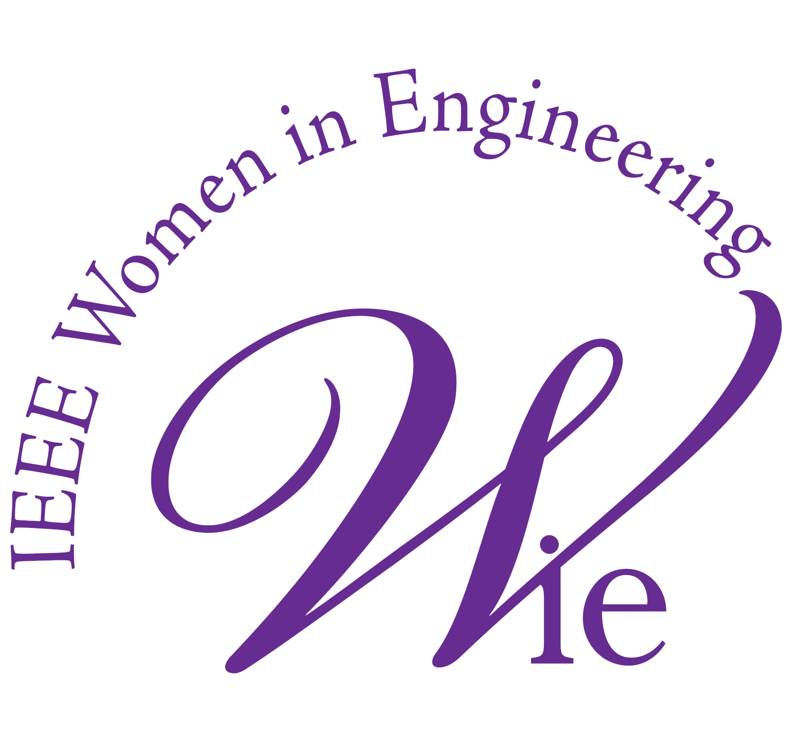
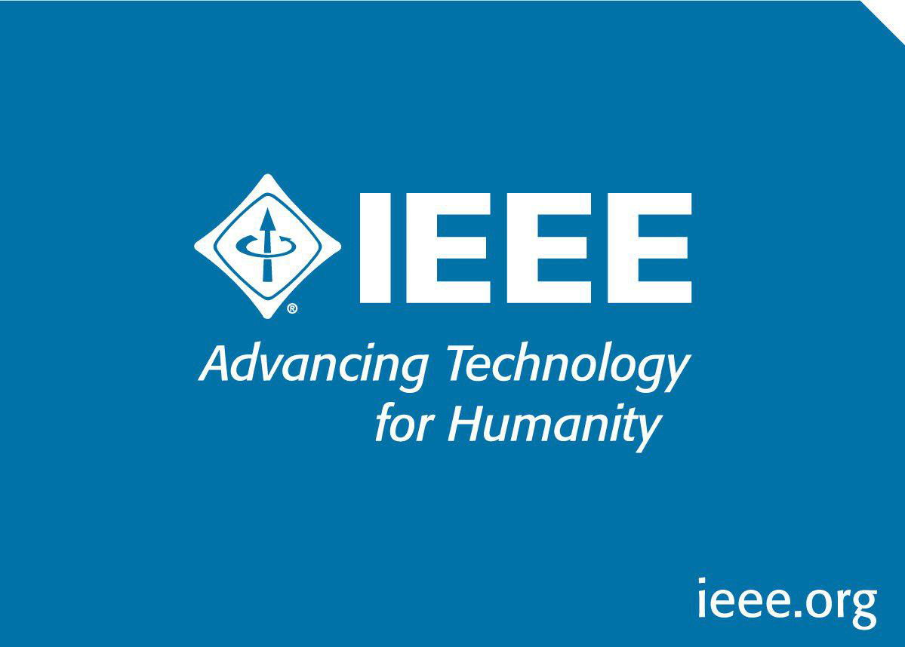

 IEEE Kochi Hub WIE Congress is a women oriented techno-managerial event hosted by different colleges under IEEE Kochi Hub banner.The event provides a learning platform for IEEE members from various colleges to come together and revamp their technical know-how. This event aims at empowering women in the technical world and moulding their management skills because technical knowledge along with management skills will pave the way for wonders to come! A whooping number of passionate engineers graduate every year - a well known fact. But what makes YOU different? Your knowledge and skills! Enhance your knowledge and polish your skills. This is the right platform.
In Virginia Woolf's essay, A Room of One's Own, she writes: "For most of history, Anonymous was a woman." Its REVOLUTION TIME folks.. a time to rephrase history..to create a world where woman are no longer anonymous rather a symbol of power and virtue...a world where men pave way for a woman’s success….Yes!!! Even a small step in the right direction can reap wonders.Its high time we contribute to the world as a team..
So brace yourself..IEEE student branch of Viswajyothi presents..IRIS 2K15..IEEE Kochi Hub WIE congress… a tech savvy fortuity for you all to burst forth and amplify your potential beyond the realm of possibility and conquer the impossible. Come and meet highly motivated and enthusiastic peers and inspirational teachers from various walks of life.
IEEE is the world's largest professional association advancing technology for the benefit of humanity. It publishes technical journals, sponsors conferences, develops technology standards, and supports the professional interests of more than 400,000 members over 150 countries. IEEE was formed in 1963 after a merger between the Institute of Radio Engineers (IRE), founded in 1912, and American Institute of Electrical Engineers (AIEE), founded in 1884. Members of IEEE rely upon the society as a source of technical and professional information resources and services. And through this global membership, IEEE is now the leading authority on a range of technology including aerospace systems, computers, telecommunications, biomedical engineering, electric power, consumer electronics and many more. The IEEE serves more than to just provide a networking platform for professionals. The organisation sponsors over 850 conferences annually to aid the progression of technology. Furthermore, there are over 1,500 student branches for IEEE around the world creating a membership of nearly 80,000 students.
Viswajyothi is the lamp of God which brings light to the whole world. It aims to convey glow for the whole world and to bring all to radiance from darkness. "Service of GOD through service of Humanity" is the driving motto of the Kothamangalam Diocese. Viswajyothi College of Engineering & Technology is yet another hallmark of the commitment and experience of the Kothamangalam Diocese in the field of education. Our Vision Moulding Engineers par Excellence with Integrity Fairness and Human Values aims to mould Engineers for tomorrow for the welfare of mankind and Society. Viswajyothi College of Engineering and Technology is the one of the first Self Financing Engineering college in the state which started working in June 2001. The developing infrastructure of the college is truly bound to make the campus, internationally competent in the coming years. Apart from academic achievements the College has also put up sincere efforts to develop Entrepreneurship environment among our students. The college is situated at a distance of 6km from Muvattupuzha Bus Stations at Vazhakulam, The Pineapple city of Asia, in Muvattupuzha – Thodupuzha State Highway.